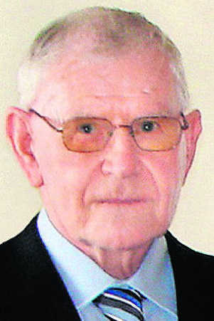

Artical
Baldur Sigurður Kristensen
1.4.1929 - 21.4.2007
Baldur Sigurður Kristensen fæddist á Þormóðsstöðum við Skerjafjörð 1. apríl 1929. Hann lést á Landakotsspítala, deild L-4 21. júní síðastliðinn og fór útför hans fram frá Fossvogskirkju 1. júlí.
<<<<<<< HEADElskulegur tengdafaðir minn hefur fengið hvíldina eftir löng og ströng veikindi. Baldur var vandaður maður og vel kynntur. Hann hafði áhuga á fólki og mannlífinu í kringum sig. Þekkti marga og landið eins og lófann á sér eftir að hafa starfaði í áratugi við keyrslu hjá Vegagerð ríkisins. Það eru liðin rúm 27 ár síðan ég kynntist honum er hann kom að kíkja á fyrsta barnabarnið sitt sem var nýfætt og tengdamömmu fannst hann sýna fréttunum í sjónvarpinu meiri áhuga en barnabarninu. En það átti eftir að breytast. Áhugi hans og elska á barnabörnunum var eftirtektarverð. Alltaf var hann tilbúinn að gera allt fyrir þau. En ekki bara fyrir þau. Hjálp og greiðasemi hans var einstök og minnist ég sérstaklega með þakklæti í huga alla hjálp við mig þegar Helga Lilja veiktist þegar hún var lítil. Sá tími var erfiður en tengdapabbi hélt alltaf ró sinni.
Ég minnist allra veiðiferða saman í lax í Langadal, sjóbirting í Geirlandsfljót og silung í Veiðivötn. Allar sögurnar sem hann sagði af ferðum sínum hér áður um landið í alls konar veðrum og færð þegar kannski tók marga daga að fara það sem við förum nú á 2 til 3 tímum. Baldur var einstakt snyrtimenni, alltaf flottur í tauinu og gekk vel um alla hluti, hvort sem var hans eða annarra. Ég mun geyma minningu góðs manns og vinar með kærleika og söknuði. Blessuð veri minning Baldurs.
Hulda Guðný Ásmundsdóttir. Afi okkar, hann Baldur, hefur nú kvatt okkur og þennan heim eftir langa og góða ævi, þótt veikindi hafi sett strik í reikninginn þessi síðustu ár. Við finnum fyrir sorginni en nærumst á því að hugsa til þess að hann hvíli nú í friði. Alzheimer-sjúkdómur er erfiður sjúkdómur að fást við fyrir alla aðstandendur og að sjálfsögðu mest fyrir sjúklinginn sjálfan. Hann afi kenndi okkur með fordæmi að takast á við hindranir lífsins með brosi og jákvæðu viðmóti, þó oft sé það erfitt. Afi keyrði bíla hjá Vegagerðinni í tugi ára og bílar voru hans áhugamál. Hann hugsaði alltaf mjög vel um þá. Einn af þessum bílum keyrði hann yfir eina og hálfa milljón kílómetra, sem er alveg einstakt og af því tilefni kom mynd af honum við bílinn í Volvoblaðinu. Á ferðum sínum hafði hann alltaf með sér myndavél og átti hann fjöldann allan af myndum af alls konar uppákomum úr vinnunni. Afi hafði líka mjög gaman af því að veiða og vera í góðum félagsskap.
Engan þekkjum við sem var eins mikið snyrtimenni og afi, alveg sama hvar komið var að: bílskúrinn, bíllinn, fötin og skórnir. Afi var líka með afbrigðum bóngóður og þá ekki síst við okkur barnabörnin. Hann afi var alltaf tilbúin í að hjálpa.
Margar eru minningarnar þar sem afi er í aðalhlutverki: sunnudagsbíltúrarnir, skoða skipin í höfninni og gefa öndunum brauð. Laugavegsferðirnar fyrir jólin eru minnisstæðar, kaupa jólagjöf handa ömmu, jól og áramót í Fögrubrekku, horfa á barnatímann og teiknimyndir í sjónvarpinu með honum, ferðalögin, saltfiskurinn í hádeginu á laugardögum, skatan á Þorláksmessu og svo lengi mætti áfram telja.
Við erum sammála um að fáa menn höfum við hitt sem búa yfir jafngóðu yfirbragði og geislandi jákvæðni og hann afi bjó yfir. Alltaf var hann hress og kátur og munum við systkinin ekki eftir því að hafa séð hann reiðan. Slíkir eiginleikar vaxa ekki á trjánum og eru sjaldgæfir á þeim tímum sem við lifum á.
Afi var áhugasamur um marga hluti og iðinn í bæði leik og starfi. Hann var einnig mjög stoltur og áhugasamur um okkur barnabörnin sín og talaði við okkur eins og sína bestu vini.
Við munum ávallt minnast hans með ást og þakklæti í hjarta. =======
Elskulegur tengdafaðir minn hefur fengið hvíldina eftir löng og ströng veikindi. Baldur var vandaður maður og vel kynntur. Hann hafði áhuga á fólki og mannlífinu í kringum sig. Þekkti marga og landið eins og lófann á sér eftir að hafa starfaði í áratugi við keyrslu hjá Vegagerð ríkisins. Það eru liðin rúm 27 ár síðan ég kynntist honum er hann kom að kíkja á fyrsta barnabarnið sitt sem var nýfætt og tengdamömmu fannst hann sýna fréttunum í sjónvarpinu meiri áhuga en barnabarninu. En það átti eftir að breytast. Áhugi hans og elska á barnabörnunum var eftirtektarverð. Alltaf var hann tilbúinn að gera allt fyrir þau. En ekki bara fyrir þau. Hjálp og greiðasemi hans var einstök og minnist ég sérstaklega með þakklæti í huga alla hjálp við mig þegar Helga Lilja veiktist þegar hún var lítil. Sá tími var erfiður en tengdapabbi hélt alltaf ró sinni.
Ég minnist allra veiðiferða saman í lax í Langadal, sjóbirting í Geirlandsfljót og silung í Veiðivötn. Allar sögurnar sem hann sagði af ferðum sínum hér áður um landið í alls konar veðrum og færð þegar kannski tók marga daga að fara það sem við förum nú á 2 til 3 tímum.
Baldur var einstakt snyrtimenni, alltaf flottur í tauinu og gekk vel um alla hluti, hvort sem var hans eða annarra. Ég mun geyma minningu góðs manns og vinar með kærleika og söknuði. Blessuð veri minning Baldurs.
Hulda Guðný Ásmundsdóttir.Afi okkar, hann Baldur, hefur nú kvatt okkur og þennan heim eftir langa og góða ævi, þótt veikindi hafi sett strik í reikninginn þessi síðustu ár. Við finnum fyrir sorginni en nærumst á því að hugsa til þess að hann hvíli nú í friði. Alzheimer-sjúkdómur er erfiður sjúkdómur að fást við fyrir alla aðstandendur og að sjálfsögðu mest fyrir sjúklinginn sjálfan. Hann afi kenndi okkur með fordæmi að takast á við hindranir lífsins með brosi og jákvæðu viðmóti, þó oft sé það erfitt.
Afi keyrði bíla hjá Vegagerðinni í tugi ára og bílar voru hans áhugamál. Hann hugsaði alltaf mjög vel um þá. Einn af þessum bílum keyrði hann yfir eina og hálfa milljón kílómetra, sem er alveg einstakt og af því tilefni kom mynd af honum við bílinn í Volvoblaðinu. Á ferðum sínum hafði hann alltaf með sér myndavél og átti hann fjöldann allan af myndum af alls konar uppákomum úr vinnunni. Afi hafði líka mjög gaman af því að veiða og vera í góðum félagsskap.
Engan þekkjum við sem var eins mikið snyrtimenni og afi, alveg sama hvar komið var að: bílskúrinn, bíllinn, fötin og skórnir. Afi var líka með afbrigðum bóngóður og þá ekki síst við okkur barnabörnin. Hann afi var alltaf tilbúin í að hjálpa.
Margar eru minningarnar þar sem afi er í aðalhlutverki: sunnudagsbíltúrarnir, skoða skipin í höfninni og gefa öndunum brauð. Laugavegsferðirnar fyrir jólin eru minnisstæðar, kaupa jólagjöf handa ömmu, jól og áramót í Fögrubrekku, horfa á barnatímann og teiknimyndir í sjónvarpinu með honum, ferðalögin, saltfiskurinn í hádeginu á laugardögum, skatan á Þorláksmessu og svo lengi mætti áfram telja.
Við erum sammála um að fáa menn höfum við hitt sem búa yfir jafngóðu yfirbragði og geislandi jákvæðni og hann afi bjó yfir. Alltaf var hann hress og kátur og munum við systkinin ekki eftir því að hafa séð hann reiðan. Slíkir eiginleikar vaxa ekki á trjánum og eru sjaldgæfir á þeim tímum sem við lifum á.
Afi var áhugasamur um marga hluti og iðinn í bæði leik og starfi. Hann var einnig mjög stoltur og áhugasamur um okkur barnabörnin sín og talaði við okkur eins og sína bestu vini.
Við munum ávallt minnast hans með ást og þakklæti í hjarta.
Helga Lilja, Hjalti og Kristinn Þór Kristinsbörn. >>>>>>> 9750f1132b77a5532cf170d5ff782815fba35bbb
Hér eru leiðbeiningar á jarðarför Baldurs í dag klukkan 15:00